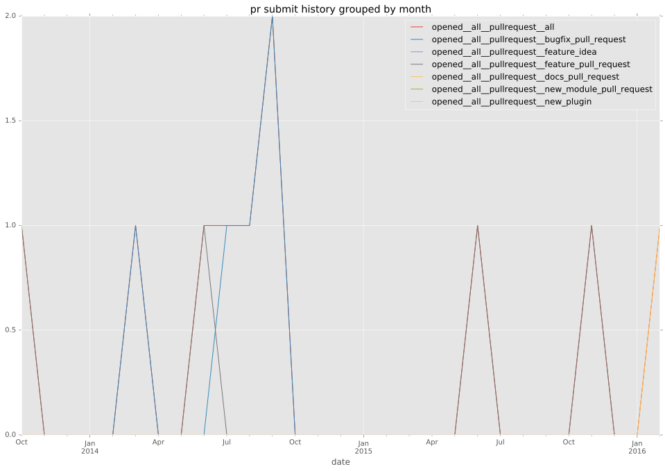

authors
- mgregson
maintainers
- mgregson
- alukovenko
contributors
- abadger : 10 commits
- MikeCaspar : 1 commits
- kamaln7 : 2 commits
- axilleas : 1 commits
- Hypermanzer : 1 commits
- jctanner : 1 commits
- mgregson : 17 commits
total issue counts
feature pull request: 4
pullrequest: 11
docs pull request: 1
bugfix pull request: 6
feature idea: 1
issue: 1
issue history

pullrequest history

days open by issue type
bugfix pull request
count: 8
std: 1.24642345476
min: 0
max: 3
median: 1.0
mean: 1.125
all
count: 15
std: 158.487253506
min: 0
max: 603
median: 3.0
mean: 68.0666666667
pullrequest
count: 0
std: nan
min: nan
max: nan
median: nan
mean: nan
docs pull request
count: 2
std: 0.0
min: 5
max: 5
median: 5.0
mean: 5.0
feature pull request
count: 4
std: 76.7479641424
min: 2
max: 161
median: 118.0
mean: 99.75
feature idea
count: 1
std: nan
min: 603
max: 603
median: 603.0
mean: 603.0
issue
count: 0
std: nan
min: nan
max: nan
median: nan
mean: nan
closures grouped by total days open